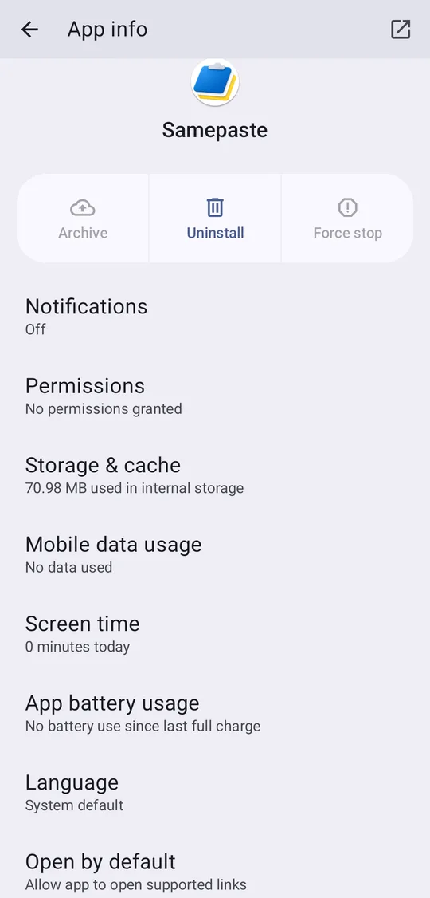
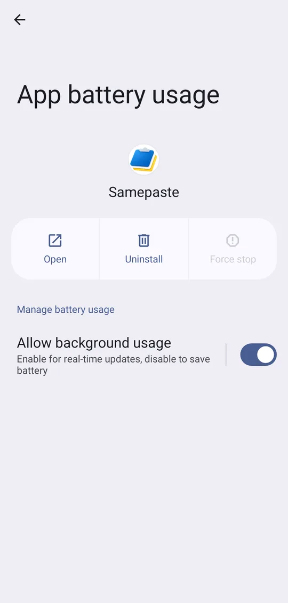
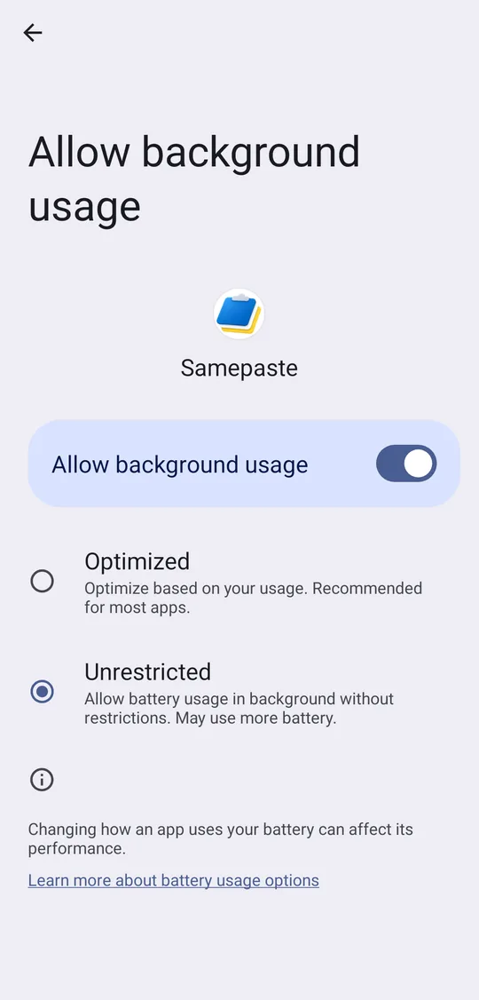

Clipboard sync stops when your phone screen is off
What you copy on the PC arrives fine while the phone is awake, but a little after the screen turns off it stops. Wake the phone and open the app and it all arrives at once, or never does.
Nothing is broken. While the screen is off, Android saves battery by putting apps to sleep or stopping them. A clipboard sync app has to stay awake with the screen off, so lift the battery limit for that one app. The same goes for Link to Windows, KDE Connect and other sync apps.
“Currently it either gets stuck halfway through or doesn’t send at all if the phone is idle.”
reddit r/androidapps“Background service automatically turned off after about 1hour ... Due to this clipboard is not syncyed.”
Google Play review (Clip Cloud)Try these three
Open the app’s App info
Long-press the sync app’s icon on the home screen or in the app drawer and tap ⓘ (App info). Settings › Apps › See all apps › the app gets you to the same place.

App battery usage › tap the words Allow background usage
Tap the words, not the switch, to reach the next screen. Turning the switch off does the opposite: the app can do nothing with the screen off.

Choose Unrestricted
Optimized (the default) may put the app to sleep once the screen is off. Unrestricted lets it keep receiving with the screen off. Only this app changes; every other app still saves battery.

On a Galaxy
In App info, tap Battery and Unrestricted is right there.
Separately, a Galaxy sends apps you haven’t opened for a while to sleep. In Settings › Battery › Background usage limits, remove the app from Sleeping apps or Deep sleeping apps (⋮ › Remove) and add it to Never auto sleeping apps.
If it still stops
Some phone makers add their own app killers on top of this. Find your maker on dontkillmyapp.com for the path in that maker’s own menu names.
On some phones, swiping the app away in Recents stops it completely. Leave sync apps in Recents.
Samepaste asks for this setting the first time it opens, and if it gets blocked later its home screen shows what to tap.